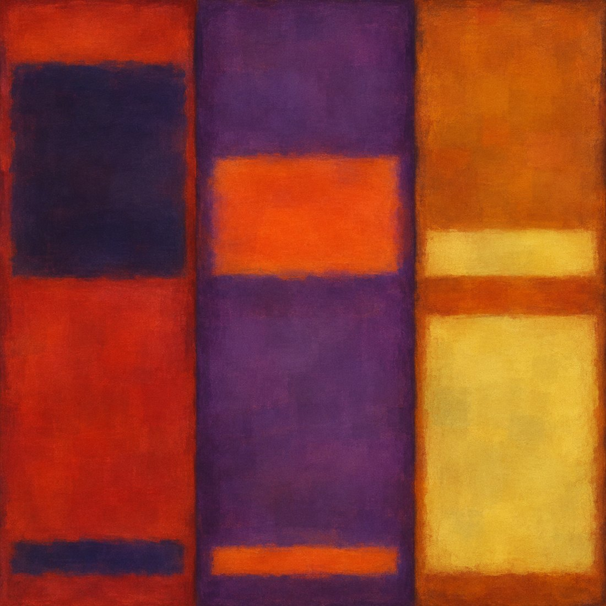
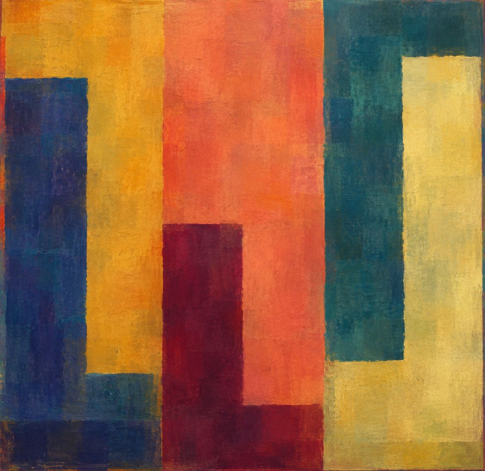
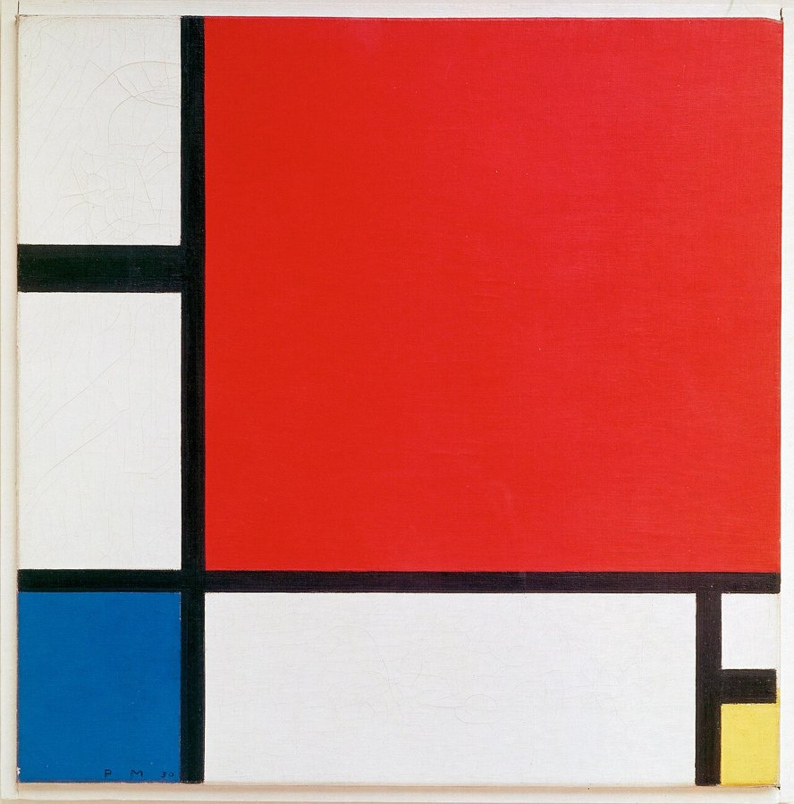
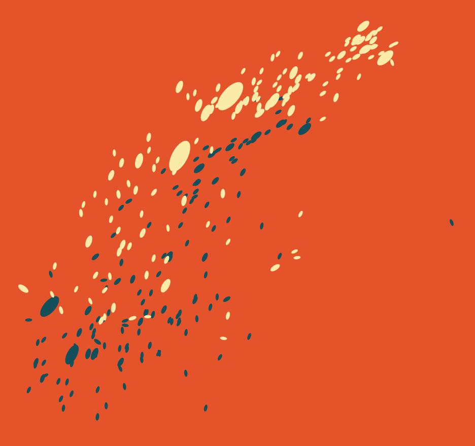
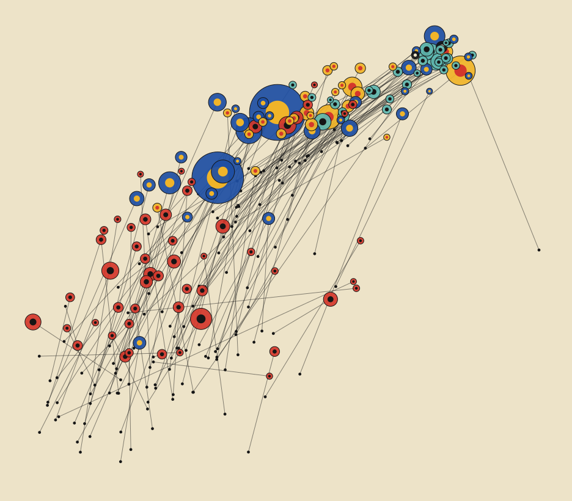

Meanderings & Digressions · Data stories · November 2026
Paintings With Legends
Six numbers, three abstract painters, and what a label does to a picture
I saw Steven Alexander's paintings in a gallery and enjoyed them. They are big blocks of saturated color fitted against each other, with no subject to decode. I kept thinking about them afterward.
I had also been thinking about how gloomy people are about the state of the world. Some of that is earned, and there is room for improvement on nearly every front. But step back two centuries and the picture changes. By the basic measures of how people live, this is one of the best periods in human existence.
The two thoughts met. What if the proportions in a painting like Alexander's were the numbers?
So I gave Claude six numbers and asked for paintings. The numbers describe how people live: the share of the world in extreme poverty, the share of children who die before age five, and the share of adults who can read. Each is measured twice, about two centuries apart.Global estimates from Our World in Data. Extreme poverty: about 80% in 1820, under 10% in 2019. Dying before age five: about 43% around 1800, 4.3% in 2015. Adult literacy: 12% in 1820, 87% in 2023.
I wanted paintings because a chart and an abstract painting are built from the same parts. Both are rectangles, color, position and proportion. The chart ships with a legend. The painting doesn't.
So what happens if you make the painting first and add the legend second? Each study below appears twice: once bare, the way it would hang on a wall, and once with its labels.These are studies in the manner of each painter, made for this post. None reproduces an actual work. The Rothko and Alexander studies are generated images. The Mondrian was drawn in code.
Rothko: the share as a glow
Rothko said he was interested only in expressing basic human emotions: tragedy, ecstasy, doom. Look at the left picture with that in mind. Three columns, each holding soft rectangles that seem lit from behind. You feel something. You couldn't say what.
First, a real one for comparison.
His bands stack in one column and float on the ground color. The study below borrows that and repeats it three times.

Now the right picture. The dark band that fills most of the upper red field is four out of five people in 1820, living in extreme poverty. The thin strip at the bottom of the lower field is the same group in 2019.
The labels don't drain the painting. The soft edges that read as mood in the first picture read as uncertainty in the second.
Steven Alexander: the shape of a change
This is the painter who started the exercise. Alexander builds canvases out of interlocking blocks of saturated color. The edges are firmer than Rothko's, and the shapes lock into each other like joinery.More of his paintings are at David Richard Gallery and on his American Abstract Artists page.

Here the encoding changes what you see. A tall column next to a low one draws the letter L, so a decline makes an L and a rise makes its mirror image. Two of the three panels are Ls and the third is reversed. The asymmetry of the composition is the finding: two bad things fell and one good thing rose.
Then I checked the paintings against the numbers. Tufte's first rule is that the picture must not lie about the data, and he gave the offense a measurement: the lie factor, the size of the effect in the graphic divided by the size of the effect in the data.
| Then → now, % | Data | Rothko | Alexander | Mondrian |
|---|---|---|---|---|
| Extreme poverty | 80 → <10 | 79 → 11 | 82 → 20 | 80 → 9 |
| Dying before age 5 | 43 → 4.3 | 45 → 10 | 52 → 14 | 43 → 4 |
| Able to read | 12 → 87 | 17 → 83 | 23 → 88 | 12 → 87 |
The Alexander study paints every small number too large. Child mortality today stands at 14% of the panel where the data says 4.3%. Every change in the picture is smaller than the change in the world.For child mortality the data falls 90% and the painted shape falls 73%, a lie factor of about 0.8. For literacy it is about 0.45. Tufte's examples usually exaggerate. This one understates. I'd hypothesize that an image generator cares more about a balanced composition than a faithful sliver, and a 4% foot makes a weak L. The labels in the figure carry the true values.
Mondrian: the chart that was already there
Mondrian reduced painting to black lines, right angles, white ground and three primary colors. That is also a fair description of a disciplined bar chart.

The real painting is lopsided on purpose. One red square takes most of the canvas, and the blue and yellow are pushed to the corners. Mondrian balanced it by eye. My version below keeps his vocabulary and gives the balancing to the data.
This one was drawn in code, and the table above shows the difference. Its widths match the data to the pixel. Every colored mark is a number and every black line is the grid, which is close to what Tufte meant by spending ink only on data.
Unlabeled, it is the most accurate chart of the three and nobody would guess it was a chart. That says something about how little separates the two genres.
What the labels did
Count the words in the labeled versions. Three measure names, a handful of years and six percentages turn a painting into a statistical graphic. Remove them and it turns back.
Tufte defined graphical excellence as giving the viewer the greatest number of ideas in the shortest time with the least ink in the smallest space. The labeled Rothko is not that. A two-row table does the job in less ink. What the painting buys is the first look, the few seconds when you're drawn to an image before you know what it's for.The definition is from The Visual Display of Quantitative Information, as is the lie factor.
That order may matter more than the picture. Seeing the bare version first means you've already formed a feeling about the big dark band before you learn it stands for people. My guess is that a number met this way is held a little longer than the same number in a table. I haven't tested it.
Two that stayed charts
Six numbers suit a painting. What about three hundred? I tried the same idea on Gapminder's country data: income and life expectancy for 142 countries in 1952 and again in 2007.

↑ longer life higher income → 1952, dark 2007, pale
↑ longer life higher income →The scatter almost explains itself. A pale cloud sits up and to the right of a dark one, and you read "everything moved" before reading anything else. Median life expectancy rose from 45 to 72 years, and it rose in 140 of 142 countries.
The second study replaces the two clouds with lines, which is where a line chart comes from: connect a thing to its earlier self. With circles and ruled lines it leans toward Kandinsky's geometry. It also carries more information than anything else on this page, because you can follow a single country.
Neither one fools you the way the first three do. With 142 marks, position does all the work and the picture can't hide that it is a plot. Abstract painting runs on a few large shapes, so it has room for a few large numbers. Past that, the data starts making the composition and the painter is out of a job.
Back to the dark band
Rothko wanted tragedy, ecstasy and doom from rectangles. The dark band in the top left of the first picture is four in five people alive in 1820. The label didn't add the feeling. It told you where the feeling was coming from.
None of this says the work is finished. Close to one person in ten still lives in extreme poverty, and one adult in eight can't read. It says the distance already covered is large. You step back from a big painting to see it whole, and the same move works on two centuries.
Studies made with Claude. Data from Our World in Data and Gapminder.